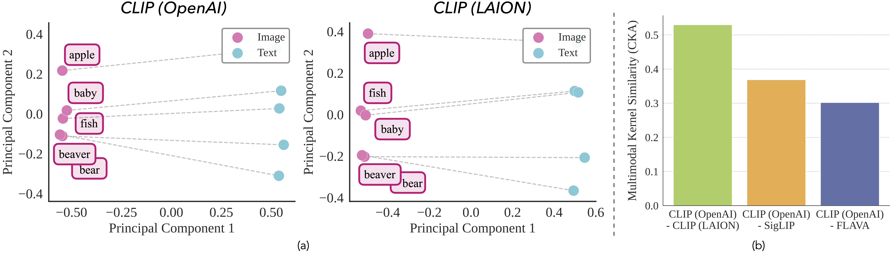
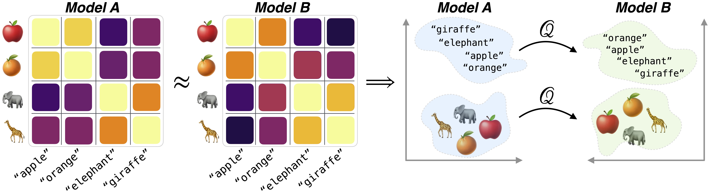
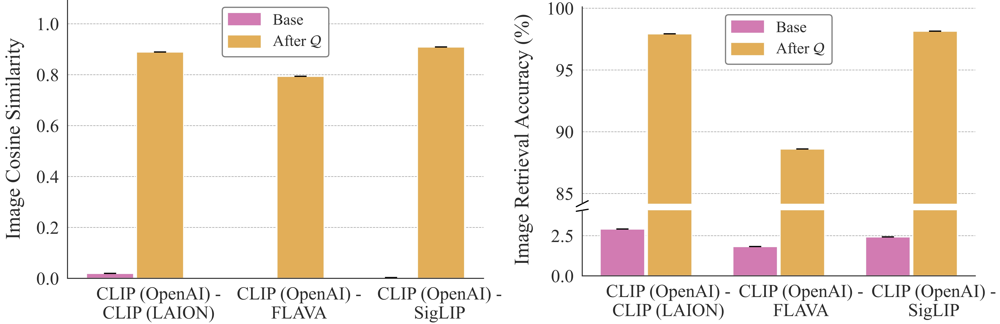
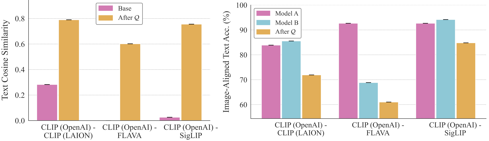
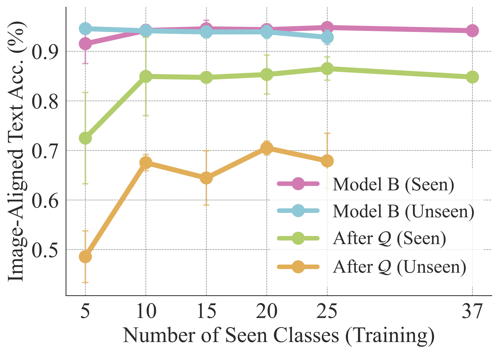
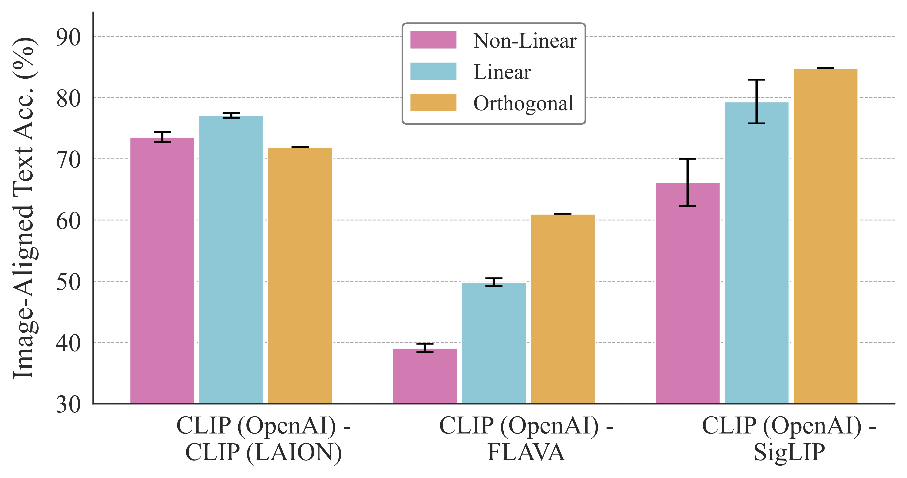
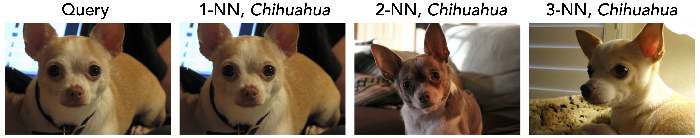
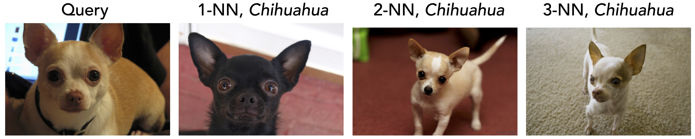

We show that the map between any two independently trained
multimodal contrastive models can be well approximated by a orthogonal map,
shared across modalities and
learnable from only a few data points in one (images or text) modality.
Abstract
As models and data scale, independently trained networks often induce analogous notions of
similarity. Yet, similarity-based measures are weaker than precise correspondence
maps between distinct models.
In this work, we show that the map between any two independently trained multimodal contrastive models
(trained on different data, with different architectures and design choices) can be
well approximated by a simple orthogonal map that is shared across modalities i.e.
$\tilde f(x) \approx Q f(x)$ and $\tilde g(y) \approx Q g(y)$, where $Q \in O(d)$ for models $(f, g)$ and $(\tilde f, \tilde g)$ and images $x$ and text $y$.
Further, we show that this map can be learned using only a few data points from a single modality (e.g., images)
and transfers to text.
Theoretically, we show that the agreement of the multimodal similarity kernel
$\langle f(x), g(y)\rangle \approx \langle \tilde f(x), \tilde g(y)\rangle$ on a small,
finite set of points forces a shared orthogonal map $Q$ across modalities.
Broadly, this finding enables backward-compatible model upgrades,
avoiding costly re-embedding, and has implications for the privacy of
learned representations.
Motivation and Intuition
Consider two multimodal contrastive models $\mathcal{M} = (f, g)$ and $\tilde{\mathcal{M}} = (\tilde{f}, \tilde{g})$, trained in complete isolation on different datasets,
with different architectures, initializations, and modeling choices. Due to optimization stochasticity and training
differences, the embedding spaces of $\mathcal M$ and $\tilde{\mathcal M}$ are a priori incomparable.
Even with identical data, jointly rotating both embeddings by any orthogonal matrix leaves
the loss and all within-model similarities unchanged. Architectural mismatch, finite-sample noise,
and optimization effects further amplify this ambiguity; under distribution shift, the models may not even share the same population optimum. So we ask:
Key Question
Given two independently trained multimodal models, does a systematic geometric relationship exist between their embedding spaces? If so, what is its form, and how does it differ across modalities?
Despite the modality gap and disjoint supports of the two models, we argue that the
alignment problem is indeed solvable because relative geometry is remarkably stable.
While the absolute coordinates of the embedding cones shift arbitrarily
between models, the angular arrangement of the texts with respect to the images remains consistent.
Mathematically, this means that the multimodal kernels are approximately preserved across models:
$\langle f, g \rangle \approx \langle \tilde{f}, \tilde{g} \rangle$.
Strikingly, this preservation of multimodal kernels is a
sufficient condition to constrain the functional form of map between the two models, forcing it to be an isometry.

Figure: Across CLIP variants, the multimodal kernel (relative angles between image and text
embeddings) is strongly preserved (dashed lines)); (b) CKA on multimodal kernels shows
high alignment across models.
Theoretical Insights
Theoretically, we prove the following:
Agreement of Multimodal Kernels. Under mild assumptions on the data curation process of the two models, the induced multimodal kernels can agree up to a constant factor.
Identifiability of the Orthogonal Map. If these multimodal kernels agree on a sufficiently rich but small finite set of anchors across the two models, then there exists a single global orthogonal map that aligns the image representations across models, and the same map simultaneously aligns the text representations across models.
Generalization of the Orthogonal Map. The above result also generalizes to settings where the multimodal kernels agree only approximately.

Figure: Theoretically, we show that if the multimodal kernels induced by two contrastive models
agree on a sufficiently rich but small finite set of anchors, a single global
orthogonal map aligns their representations across both modalities.
Experimental Findings
We evaluate three independently trained vision-language pairs: (i) CLIP ViT-B/32 (OpenAI) and CLIP ViT-B/32 trained on LAION-400M; (ii) CLIP ViT-L/14 (OpenAI) and SigLIP; (iii) CLIP ViT-L/14 (OpenAI) and FLAVA on the datasets: Oxford-IIIT Pets, CIFAR-100, Caltech-101, STL10 and DTD. We report the following evaluation metrics:
Instance level cosine similarity, measured between aligned and target embeddings for either images or texts;
Top-1 retrieval across models within a modality, evaluated for both image–image (called Image retrieval accuracy) and text–text (called Text retrieval accuracy) by nearest-neighbor matching at the class level.
Zero-shot classification, measured for transformed images against target text (denoted aligned image–text), target images against transformed text (image–aligned text), and both transformed images and transformed text (aligned image–aligned text).
Across all experiments, we fit the map $\mathcal Q$ using only images i.e $\tilde{f}(x) \approx Q f(x)$ and test it across both modalities.
1. Independently Trained Contrastive Models Differ by an Orthogonal Map Common To Both Modalities

(a) An Orthogonal Map Aligns Different Models. We first observe a that a single orthogonal map
well approximates the inter-model relationship between image embeddings by significantly improving the image-image cosine* and retrieval accuracy

(b) This Map Transfers Across Modalities. The same orthogonal map $\mathcal Q$ fit using images
sharply improves text alignment, boosting text-text cosine* and retrieval from near-chance toward near-oracle levels.
Finally, image-to-aligned-text retrieval remains strong,
showing that $\mathcal Q$ preserves task-relevant geometry while eliminating any need to compute the second model's text embeddings.
*pointwise cosine similarity is measured after adjusting for means of image and text distribtions.
2. Only a Few Data Points Are Needed to Learn the Orthogonal Map

Theoretically, we proved if the multimodal kernels induced by two contrastive models
agree on a sufficiently rich but small finite set of anchors, a single global
orthogonal map aligns their representations across both modalities. We empirically
validate this, fitting $\mathcal Q$ using images from only
$N$ classes and evaluating transfer on the remaining unseen classes. Performance on both
seen and unseen classes improves quickly with just a few anchor classes and
saturates around 10 classes, after which additional
anchors provide little benefit. Thus, practitioners can recover near-full cross-model
transfer by fitting $\mathcal Q$ on a lightweight image-only calibration set,
rather than curating large-scale cross-model supervision.
3. Alternative Alignment Maps Than The Orthogonal Mapping

Here, we ablate the alignment design by comparing three maps of increasing expressiveness:
(i) an orthogonal map $Q$, (ii) a linear map, and (iii) a non-linear MLP.
More expressive maps improve pointwise text-text cosine similarity. However, they don't
preserve image-text geometry, and the orthogonal map consistently performs best on geometry-sensitive
downstream metrics.
4. Commuting Diagrams Across Models and Modalities
Both routes (direct and text mediated maps) yield highly consistent semantic neighborhoods:
images retrieved via the text-mediated route closely match those obtained by direct image alignment.
This indicates that $\mathcal Q$ approximately commutes with the cross-modal nearest-neighbor operators, allowing
to move across modalities and models while preserving semantic relationships.
Direct Map $\mathcal{Q}$ between $x_A$ and $\tilde{x}_B$ between models $A$ and $B$

Text Mediated Map $f_B^{-1} \circ \mathcal{Q} \circ f_A$ between models $A$ and $B$

Discussion and Implications
Our results have several practical and scientific implications.
Re-embedding is not necessary. In large embedding systems, switching models typically triggers full re-embedding, often infeasible at modern scale (billions of vectors) and costly in both time and compute. We show that a small anchor set can recover the orthogonal map that restores compatibility across models. Since it preserves inner products, it supports model upgrades without re-encoding while keeping the embedding geometry intact.
Mix-and-Match Models. Models often specialize differently; one might have a stronger vision tower, while another has a stronger or multilingual text tower. Our approach lets practitioners swap and combine towers while preserving image-text geometry.
Privacy and Security. Many deployments cannot retain or share raw text (privacy, licensing, retention), yet they store embeddings. Aligning text representations without accessing text has key implications for governance and security. If embeddings across models and modalities are easily transformable, then stored embeddings may encode more transferable semantic information than anticipated, reinforcing the need to treat embeddings as sensitive artifacts.
To cite this work, please use the following bibtex:
@inproceedings{sharut2026canonicalizing,
title={Canonicalizing Multimodal Contrastive Representation Learning},
author={Gupta, Sharut and Kansal, Sanyam and Jegelka, Stefanie and
Isola, Phillip and Garg, Vikas},
journal={arXiv preprint arXiv:2602.02366},
year={2026}
}